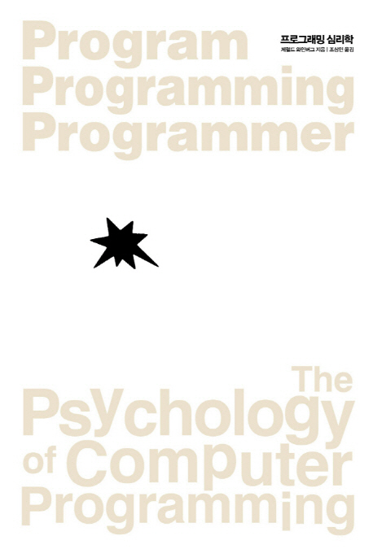

프로그래밍 팀【20917최민준, 10801곽건】
글쓴이｜제럴드 M, 와인버그 지음
옮긴이｜조상민
출판일｜1971년 (개정판은 2014년 1월에 발행)
프로그래밍 심리학은 제럴드 마빈 와인버그의 1971년 책입니다. 개정판은 2014년 1월에 발해외었으며 컴퓨터 프로그래밍을 네 가지 관점에서 바라보고 컴퓨터 프로그래밍을 심리학과 연결시킨 최초의 책입니다. 지금 여기서는 프로그래밍 심리학 중에서도 2부를 간단히 정리하여 설명하겠습니다.(2부는 총 4장, 5장, 6장이 있지만 6장 내용은 다루기가 어려워 제외하였습니다.)
프로그래머가 고립된 환경에서 일할 수 없음을 설명하면서 프로그래밍 그룹, 물리적 환경과 사회적 조직과 프로그래밍과 프로그래머의 자아와의 연관성을 설명하는 이론인 '비자아적 프로그래밍', 프로그래밍 팀을 어떻게 조직할 것인지를 설명하고 있다.
프로그래밍 그룹-같은 장소에서 일하는 집단을 말한다.
프로그래머 간의 상호 관계에 따라 존재하는 그룹을 공식그룹 이를 보안하기 위해서 만들어진 조직이다. 공식그룹을 보안하기 위해 개개인이 만든 조직을 비공식조직이라한다.
작업공간의 배치에 따라 생기는 상호작용이 생기고 이에 따라 유용한 정보가 오갈 수 있다.
개인의 성격을 3가지로 분류가 가능하다.
1.공격적 부와 특권을 얻기를 바라는 유형
2.고립적고분고분함 다른 사람들에게 도움이 되고 싶어하는 유형
3.고립적 창의성이 발휘할 수 있도록 홀로 일하기를 바라는 유형
이는 사람마다 특정한 성향이 뚜렷하게 들어나고 프로그래머란 직업이 프로그램을 개발하는게 창조하는 목적이다보니 프로그래머 대부분은 고립적인 성격을 띠고 있다 종종 자신이 만든 프로그램에 대해 애정을 갖게되고 프로그램에 있는 오류를 찾기보단 정확함을 찾으려고 한다.
이 때 비자아적 프로그래밍 자아와 이성을 분리 시켜 생각하였을 때 더 높은 결과을 만들어 낼 수 있는 방법으로 여러 사람에게 자신이 프로그래밍한 코드를 다른 사람들에게 검토하게하여 문제를 효과적으로 찾을 수 있게하는 방법이다.
프로그래밍 팀-한 프로그램을 만들기 위한 집단을 말한다.
팀의 능력에 따라 팀을 조직하는 방식도 다르게 나타난나다 만약 숙련된 프로그래머 한명과 상대적으로 미숙한 프로그래머 4명이 모였을 때 메인프로그램을 숙련된 프로그래머가 만들고 나머지 미숙한 프로그래머들은 각자의 능력에 어울리는 경험을 쌓을 수 있도록 고려하여 프로그램을 작성한다. 경험이 비슷한 프로그래머 3명이 모일 경우 각 단계를 구성하여 프로그램을 작성한다.
1.경력있는 프로그래머1명과 비교적 미숙한 프로그래머 4명이 팀을 이룰때 경력있는 프로그래머가 메인프로그램을 만들고 미숙한 프로그래머의 능력에 따른 경험을 쌓을 수 있도록 작업을 분배할 것이다.
2.경력이 비슷한 프로그래머 3명이 팀을 이룰 때 각 단계를 나누고 그 단계에 맞는 프로그램을 각각의 프로그래머들이 만들 것이다.
만든 환경을 그냥유지하는 것은 쉽고 이로인해 정착화와 고착화가 생기며 이는 새로운 환경이 만들어지는 데의 걸림돌이 된다.
리더쉽은 만족도에 영향을 주는 요인중 하나로 작업의 효율과도 관련되어있는 능력이다. 또한 리더쉽은 상황에 따라 변하며 각 요구에 따라 리더쉽을 행사하는 사람들이 달라져야하며 이를 가장 잘 실천하기 위해선 다른 팀에 비해 민주적으로 팀이 운영되어 리더쉽이 구성원을 옮겨 다니게 해 각 문제마다 유연하게 대처할 수 있어야 한다.